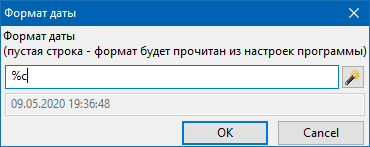

Команды (:crdate:) и (:eddate:) предназначена для вставки даты создания или даты последнего исправления текущей страницы соответственно.
Если использовать эти команды без параметров, то формат представления даты берется из настроек программы (в том формате, что вы видите дату исправления в правом нижнем углу программы). Однако, если вы хотите задать другой формат, используйте параметр format.
Формат можно задавать в диалоге, появляющемся при выборе пункта меню "Вики - Команды - Дата создания (:crdate:)" или "Вики - Команды - Дата последней правки (:eddate:)". Этот диалог показа далее:
